Activity: Creating profile-based features
This activity demonstrates the construction of profile-based ordered features.
Construct a revolved protrusion and then add cutouts and secondary protrusions.
Use the following commands to create profile-based features: (revolve, extrude, cut, revolved cut, select from sketch, parallel plane, profile, mirror, fillet, include, trim).
Click here to download the activity file.
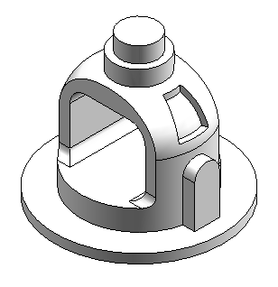
Overview
This activity demonstrates the construction of profile-based features.
Objectives
Construct a revolved protrusion and then add cutouts and secondary protrusions.
-
Open bell.par.
Create a revolved protrusion using the sketch provided with the file.
On the Home tab→Solids group, choose the Revolve command .
In the Sketch step, click the Select from Sketch option.
In the part window, select the sketch and then, click the Accept button.
For the axis of revolution, select the vertical line.
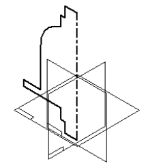
Click Finish and then click Cancel.
The sketch and axis of revolution are no longer needed. Turn off their display. Right-click in the part window. Choose Hide All→Sketches and choose Hide All→Reference Axes.
Create an extrusion. Draw the profile on a parallel plane.
In the Solids group, choose the Extrude command .
In the Sketch step, click the Parallel Plane option.
Select the reference plane shown.
Throughout this activity, hidden lines and reference planes are removed from illustrations for clarity.
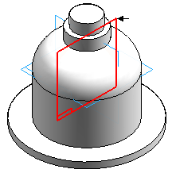
Type 82.5 in the Distance box and press Enter.
Move the cursor to the bottom right of the window, and click to define the location of the new parallel reference plane.
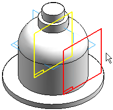
Choose the Fit command .
In the Draw group, use the Line command to draw the profile shown. Draw the profile with the same dimensional values and relationships shown below. Notice the vertical relationship between the midpoint of the vertical reference plane and the center of the profile arc.
Within the line command, press A or click the Arc option on the ribbon bar to enter arc mode. Once you place the arc, the command reverts back to line mode. When in arc mode, notice the intent zones available for arc placement.
Turn on the Tangent option in IntelliSketch. This applies a tangent relationship when placing the arc.
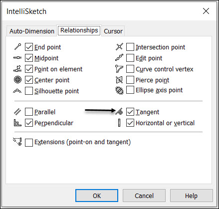
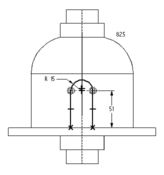
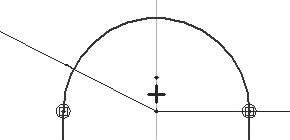
Choose Close Sketch.
Move the cursor so that the arrow points as shown and click. This will add material to the inside of the profile.
Notice the side step on command bar. When you use an open profile, you must specify the side of the profile to add material to.
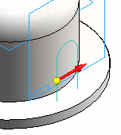
On command bar, click Through Next.
Move the cursor so that the arrow points as shown and click.
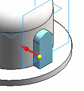
Click Finish to complete the protrusion.
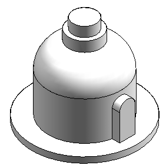
Remove material from the part using an open profile.
The Extrude command is still active.
On command bar, click the Coincident Plane from the plane type list. Select the reference plane shown.
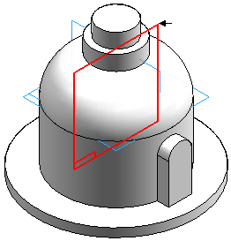
Draw the open profile.
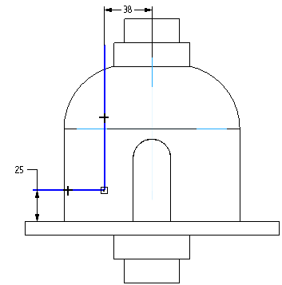
Click Close Sketch.
Position the direction arrow as shown to remove material outside the open profile.
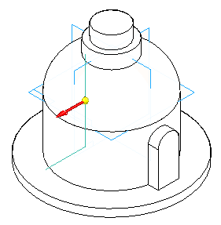
On the command bar, set the Add/Cut option to Cut.
On command bar, click the Through All extent option. Position the arrow as shown to remove material in both directions.
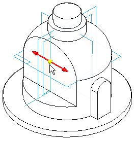
Click Finish.
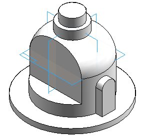
In the Pattern group, choose the Mirror command.
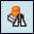
Select the cutout feature.
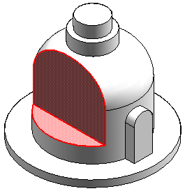
On command bar, click the Smart option and then click the Accept button.
Select the Front (xz) reference plane as the mirror plane.
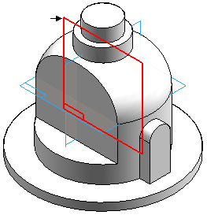
Click Finish.
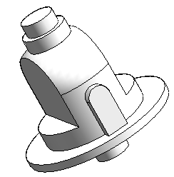
Remove material from the middle of the part using a closed profile.
Choose the Extrude command .
Select the reference plane shown.
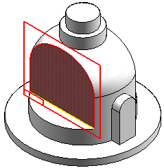
Draw the profile. Connect the midpoint of the top line segment to the vertical reference plane (1).
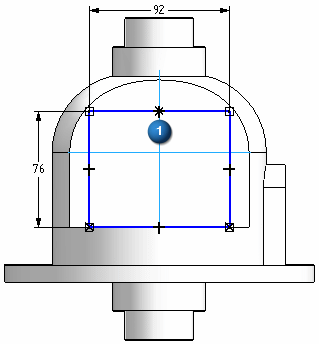
Click Close Sketch.
Click the Through All extent option. Position the arrow as shown to remove material in both directions.
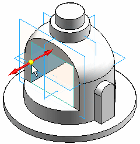
Click Finish and then click Cancel.
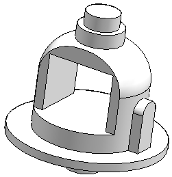
Save the file.
Round edges of the cutout features.
In the Solids group, choose the Round command .
Select the six edges as shown.
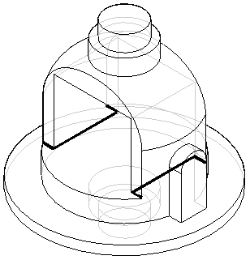
Type 10 for the radius and then click the Accept button.
Click Preview then click Finish.
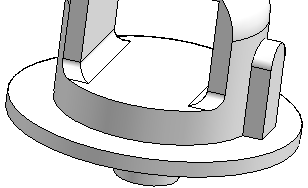
Place 19 mm rounds on the two edges shown.
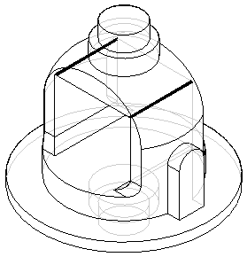
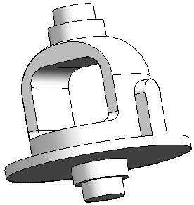
Add a revolved cutout to the part. To create this cutout, include and offset an existing part edge.
Choose the Revolve command
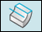
.Select the reference plane as shown.
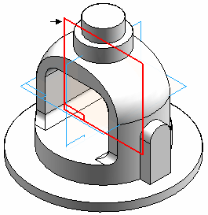
In the Draw group, choose the Project to Sketch command .
On the Project to Sketch Options dialog box, set the Project with offset option and click OK.
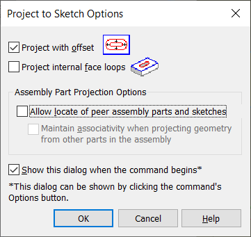
Select the arc shown, and on the command bar click the Accept button.
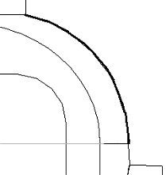
Type 6.5 in the Distance field and press Enter.
Click inside the arc to accept the offset. Notice that the system places a dimension between the offset element and the arc from which it is offset.
Draw a horizontal line and a vertical line as shown.
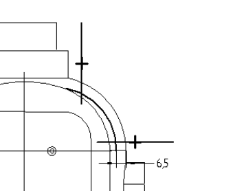
Choose the Trim command .
Trim away the lines and arc to produce the following profile shape. If a mistake is made, click Undo and repeat the step.
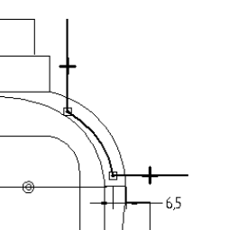
Choose the Distance Between command , and place dimensions as shown. Edit the values of the dimensions to the values shown below.
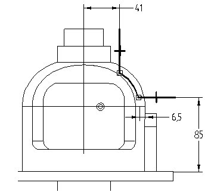
On the Home tab→Draw group, choose the Axis of Revolution command .
To define the axis of revolution, select the reference plane labeled (1).
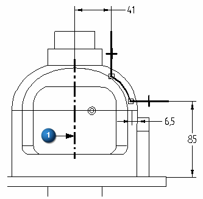
Click Close Sketch.
To define the direction of material removal, position the cursor so that the arrow points to the outside of the part, and click.
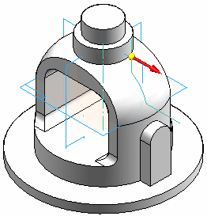
On the command bar, set the Add/Cut option to Cut.
On command bar, click the Symmetric Extent button. Type 30 in the Angle field and then press Enter.
Click Finish and then click Cancel to complete the revolved cutout.
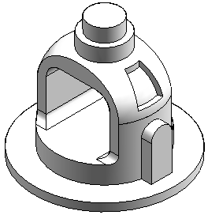
Save and close the file. This completes the activity.
In this activity you learned how to create a base feature and then construct additional features to complete the part. The include command used existing geometry which made the features associative. Because the geometry is associative, it will respond predictably to modifications. An open profile in the Revolved Cut command was used to show that the profile adjusts itself to intersect the face of the protrusion it is cutting.
-
Click the Close button in the upper–right corner of this activity window.